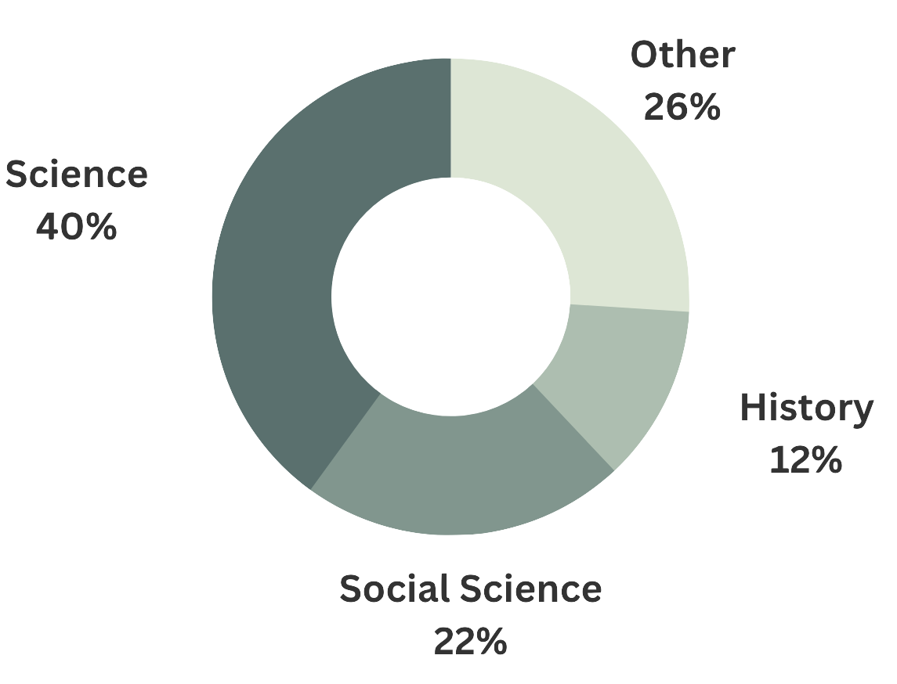
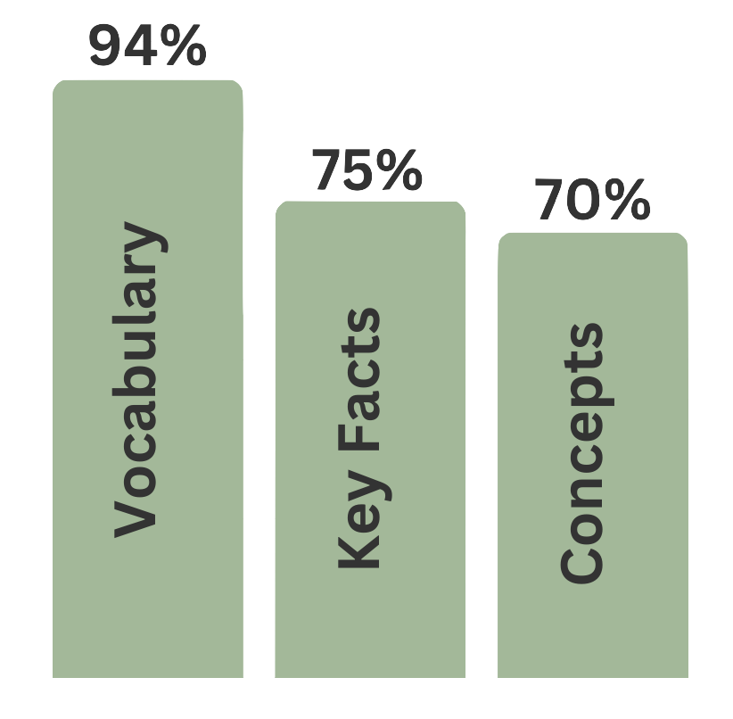
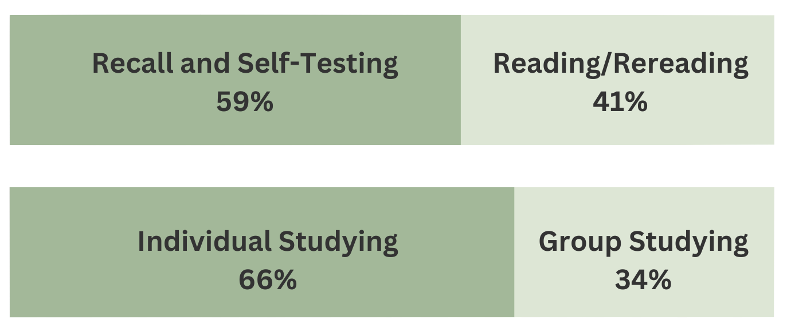
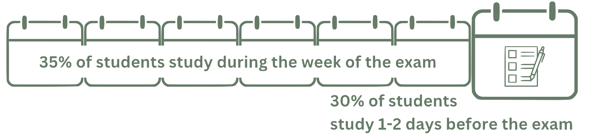

What do Students Study?


How do Students Study?

When do Students Study?

Are Digital Flashcards Popular?
77% of students have used digital flashcards
99.3% of these students use Quizlet
How Are Digital Flashcard Sets Created?
36.7% of students copy and paste
36.4% of students type out their flashcards
Do Students Utalize
Platform Features?
Shuffling: Randomize the order of the cards
86.5%
Starring: Highlight a card to draw attention
Study Later: Keep a card to study later
63.9%
Dropping: Remove a card from the study set without deleting it
34.2%
Self-Made v. Pre-Made
Participants had a slight preference for pre-made sets due to their quick and easy accessibility. On the other hand, those who preferred self-made sets liked the ability to control what information they included and they appreciated the additional review of deciding what information to include. These flashcard creaters tended to care less about accessibility and more about the quality of the information.
Digital v. Paper
Almost all respondents who used digital flashcards also used paper ones, however, they used the digital flashcards more frequently than paper flashcards. Additionally, their digital flashcard sets were typically larger than their paper sets. This is due to the relative ease of creating and sorting digital sets. Respondents were also more likely to drop paper flashcards from their study sets than digital flashcards, suggesting that spacing out cards within a study session is more attractive when using digital flashcards.
Impact on GPA
No statistically significant results were found betweeen digital flashcard use and grade point average.
Zung, I., Imundo, M.N., & Pan, S.C. How do college students use digital flashcards during self-regulated learning? Memory, 30(8), 923-941. https://doi.org/10.1080/09658211.2022.2058553